A Generalizable Light Transport 3D Embedding for Global Illumination
Can a network learn how light moves through a room it has never seen?
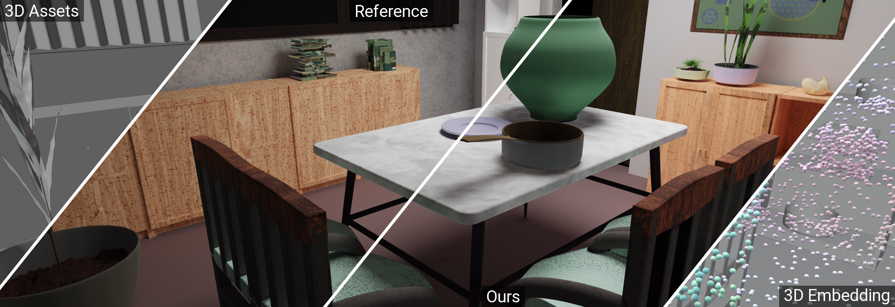
TL;DR
Turn a scene into points, let a transformer propagate light information between them, then decode illumination only where it is needed. No per-scene training. No screen-space illumination input.
Teach a transformer to bounce light
We first turn the raw 3D inputs into a point-based intermediate representation, with features such as position, normal, material properties, and emission for points on light sources. A global encoder then captures long-range light transport in 3D, while local decoders answer only the rendering queries we need.
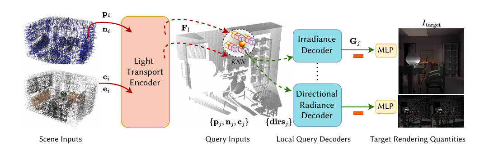
Design choices
For this rather large system, the design space is big. We made a few design decisions along the way. Each of them could be potentially improved.
Default configuration: 20k scene points · 5k embedding anchors · 2M training queries · 32 neighbors per query · 128D hidden features · 42M parameters
Why use points?
Points decouple the network's sampling density from the original mesh topology. We can sample textured surfaces where detail is needed and represent emissive and non-emissive geometry in the same format. Triangle vertices used without mesh connectivity are also one valid realization of this point representation.
This format is simple to batch across scenes and gives latent codes explicit anchors in 3D space.
Why use a transformer?
Light reaching one surface can depend on geometry, materials, and lights far across the room. Attention lets distant scene points exchange information, while stacking layers repeatedly propagates that information through the scene. A linear-complexity point transformer also gives us a practical way to scale this exchange.
This resembles recursive propagation in the Neumann-series view of light transport. Transformers are only one of many choices for 3D learning, and we do not claim they are the best one. Other scalable backbones are worth trying.
How many scene and query points are enough?
We use 20k scene points to represent the input and roughly 2M query points for supervision. Beyond 20k scene points, improvements became small on our indoor benchmark. Query coverage depends more on scene complexity: about 200k was sufficient for a Cornell box, while complex rooms benefited from 2M.
Scene-point ablation: 5k: 28.51 dB · 10k: 30.94 dB · 20k: 34.57 dB.
Why not let every point attend to every other point?
The most intuitive choice is a vanilla transformer with full attention. It worked in our early experiments, but at 20k scene points it exceeded 80 GB of training memory. We instead condense local information into 5k anchors, then use serialized point attention to propagate information across the room with linear complexity.
The scalable encoder used about 21 GB at batch size 3. See how the architecture changed in our experiment journey below.
Why decode from only 32 nearby points?
Decoding is strictly local. A query never attends to every scene point. The encoder has already carried global light information into the embedding, so each query retrieves only 32 nearby latent codes. Learned local attention is cheaper than global decoding and avoids the hard boundaries produced by naive nearest-neighbor interpolation.
k=8: 26.96 dB · k=32: 34.57 dB · k=48: 34.71 dB. Quality largely saturates at 32.
Why separate scene points from query points?
The 20k scene points define a reusable light transport embedding. Query points are separate locations where we ask for illumination, such as the surface hits of camera rays. Each query is decoded independently from its local neighbors, so changing the camera or image resolution does not require changing the scene representation.
Encode the scene once, then evaluate any number of query points at any view or resolution.
Why supervise query points instead of images?
Image supervision couples training to selected cameras and pixel grids. We instead distribute query points over each scene, teaching the embedding about the 3D environment rather than a fixed collection of views.
A dataset built for learning light transport
Existing datasets were not designed for scene-level, 3D-supervised global illumination. We built a procedural indoor dataset that preserves the whole path from floor plan to the points seen by the network.
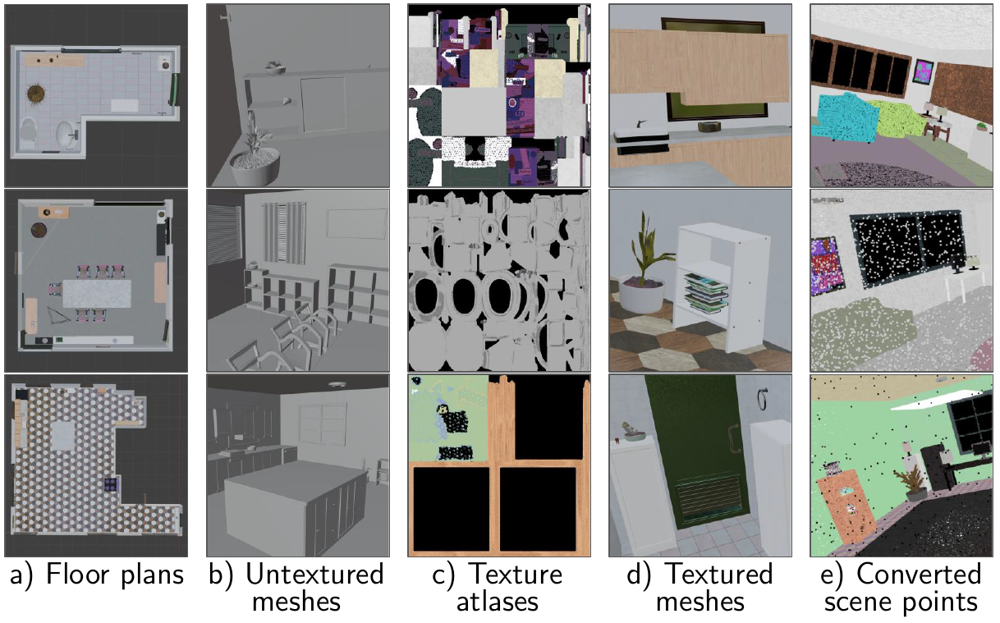
A note from 2025. A substantial part of this project was complete by May 2025, before LLMs and coding agents became this capable. With today's models and Blender MCP, we can build more structured 3D datasets, improve asset and scene validation, and iterate on the generation pipeline much faster.
Visualizing attention importance
Light transport repeatedly propagates radiance between scene locations. Stacked attention also repeatedly exchanges information between tokens. This analogy motivated us to ask whether the learned attention structure would reveal transport-like relationships.
We pull attention scores from a trained layer to see which scene points contribute to two focus points. More solid colors indicate higher importance.
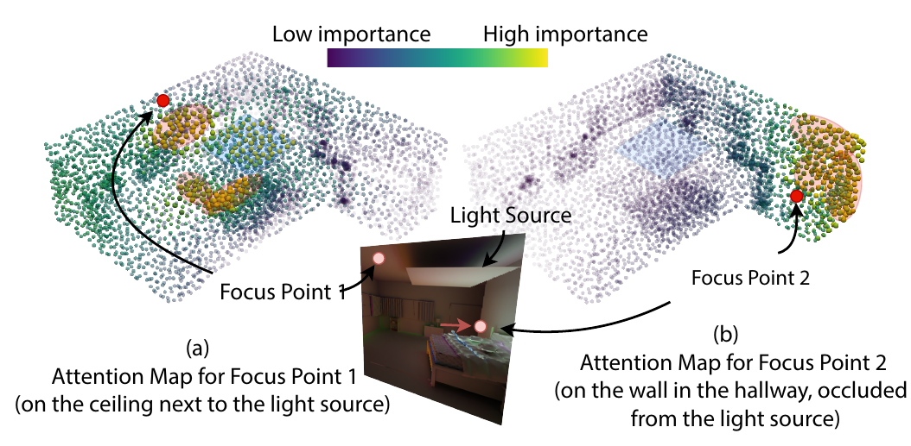
Prediction comparison
Drag once to compare all four held-out scenes.
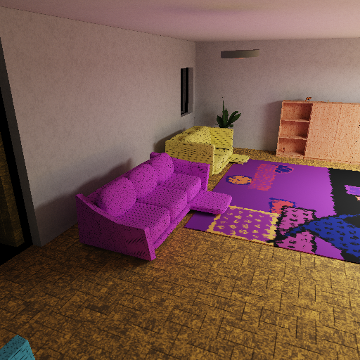
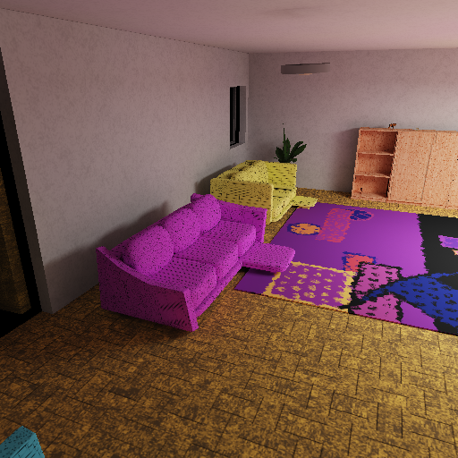
OursReference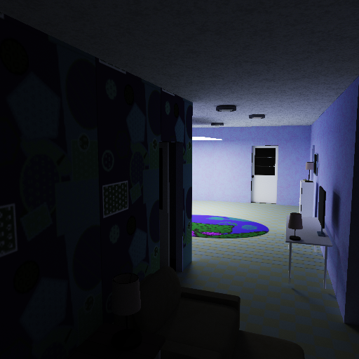
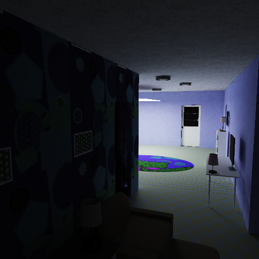
OursReference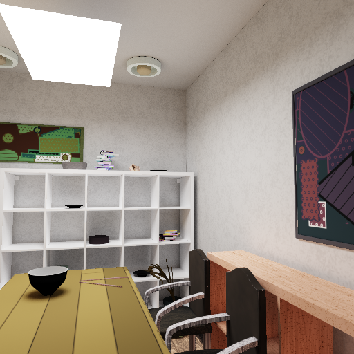
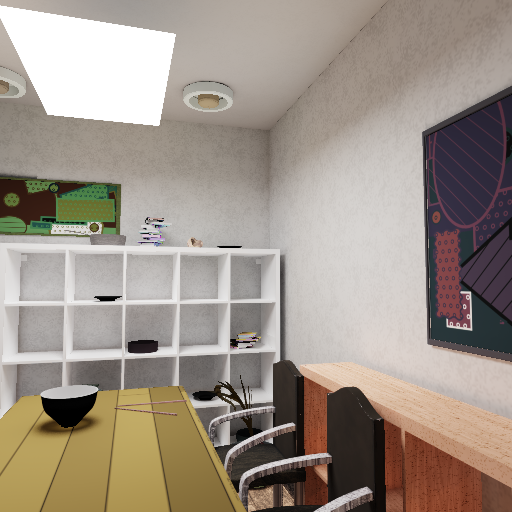
OursReference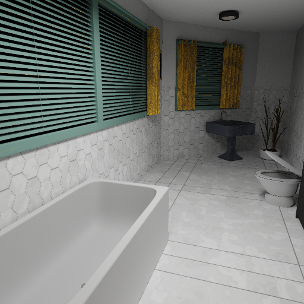
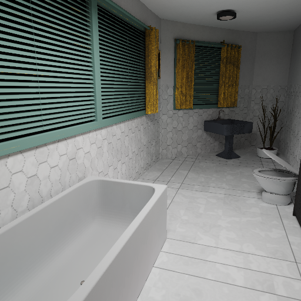
OursReferenceWhat failed may be more important than what worked
We wanted to document the experiment journey, especially what did not work. You can find what worked in the paper.
Then the network had to catch up
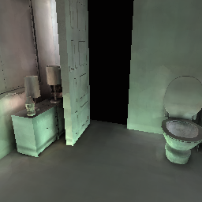
Vanilla transformerPromising, but quadratic and hard to scale.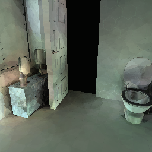
+ scalable encoderMemory problem solved; but quality drops.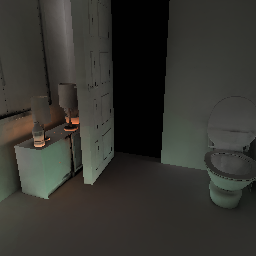
+ local query decoderLearned aggregation recovers fidelity.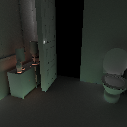
ReferencePath-traced target.Limitations
The model generalizes within the indoor distribution it was trained on. Several hard cases remain.
Distribution shifts
Rare texture tones can cause color shifts. Lighting from an adjacent room is also difficult when similar layouts are scarce in training.
Occluded samples
Points hidden beneath geometry can bleed dark latent codes into visible regions. Better sampling, pruning, or larger local neighborhoods can help.
Dynamic sequences
There is no explicit temporal constraint, so animated scenes may flicker. The current embedding is recomputed after scene changes.
Glossy transport is preliminary
We ran initial glossy-scene experiments on a smaller focused dataset by adding a Directional Radiance Decoder and fine-tuning the encoder. The current 32 × 32 directional histogram is discrete and low resolution. We compared it with spherical harmonics; compact bases such as Spherical Gaussians and Anisotropic Spherical Gaussians are promising directions for future work.
Future work
Full generalizability means more kinds of scenes and more kinds of light transport effects: caustics, SDS paths, and beyond. Is expanding the data a sustainable way to cover the entire rendering parameter space? I am afraid not.
- Beyond indoor transportOutdoor scenes, multi-room environments, participating media, translucency, and sharper specular effects.
- Dynamic embeddingsUpdate only the regions affected by moving geometry, materials, or lights instead of encoding the full scene again.
- High-performance inferenceHardware-aware kernels, compact embeddings, fused local decoding, and partial scene updates for interactive rendering.
- More efficient learningSample-efficient training and broader coverage without scaling data and compute at the same rate.
- Data plus physicsCombine learned priors with physical structure such as transport linearity and neural operators.
- Broader visual priorsConnect scalable 3D transport models with 2D foundation models to reach more in-the-wild scene distributions.
Want to push one of these directions?
If any of these questions interest you, we would love to collaborate on rendering systems, 3D datasets, dynamic neural GI, physics-grounded learning, or high-performance inference. Feel free to email me or Marco about future collaboration.
Abstract
Global illumination (GI) is essential for realism but remains computationally expensive. While per-scene neural methods lack generalization and screen-space approaches inherently suffer from view inconsistency, prior 3D neural rendering methods face a severe scalability barrier, restricting them to small, object-centric meshes. To overcome these trade-offs, we introduce a generalizable light transport 3D embedding that predicts global illumination directly from 3D scene configurations without rasterized or path-traced illumination cues, per-scene retraining, or screen-space limitations.
We employ a point-based representation to decouple our embedding from the original scene topology, then utilize a linear-complexity transformer to encode long-range light transport. This design scales to environments with millions of triangles, enabling the first generalizable GI learning on complex, high-fidelity indoor scenes, far beyond prior limits. To achieve this, we enforce a local query mechanism where rendering queries are processed independently under 3D supervision. This ensures constant complexity per pixel relative to scene size, yielding view-consistent and resolution-agnostic rendering without the memory bottlenecks typical of globally coupled attention. We further demonstrate versatility by re-targeting the encoder with limited fine-tuning, presenting preliminary results on spatial-directional radiance field prediction for glossy materials and validating transfer to downstream rendering tasks.
Assets
BibTeX reference
@inproceedings{Xu:2026:LightTransportEmbedding,
author = {Bing Xu and Mukund Varma T and Cheng Wang and Tzu-Mao Li and
Lifan Wu and Bartlomiej Wronski and Ravi Ramamoorthi and Marco Salvi},
title = {A Generalizable Light Transport 3D Embedding for Global Illumination},
booktitle = {ACM SIGGRAPH Conference Papers},
year = {2026},
doi = {10.1145/3799902.3811095}
}Acknowledgments
This work was supported in part by NSF grants 2212085, 2105806, 2100237, 2120019, 2127544, and ONR grant N00014-23-1-2526. We also acknowledge support from Apple, gifts from Adobe, Google, Activision, and Qualcomm, the Ronald L. Graham Chair and the UC San Diego Center for Visual Computing. Ramamoorthi acknowledges a part-time appointment at NVIDIA. The authors would like to thank Aaron Lefohn and Chris Wyman for their support; Matt Pharr for valuable input along the way; Thomas Akenine-Möller, Jacob Munkberg, Jon Hasselgren and Zian Wang for their suggestions regarding the evaluation, dataset and training clusters; Miloš Hašan and Benedikt Bitterli for valuable discussions; and to anonymous reviewers for constructive comments. Bing owes particular thanks to Alex Trevithick for pointers to procedural scene generation and many helpful discussions; Zimo Wang and Nithin Raghavan for generously sharing cluster training quotas; Yang Zhou for proofreading and comments; and her fellow interns for helpful discussions in the early stages.